About
I am a Lecturer III in Robotics at the University of Michigan, Ann Arbor, where I completed my PhD in Robotics in 2024, co-advised by Prof. Maani Ghaffari Jadidi and Prof. X. Jessie Yang. My work focuses on hierarchical learning for robots operating in human-centered environments. I study how robots can learn high-level behaviors from demonstrations and human feedback on top of reliable low-level skills, and I validate them in simulation and on real robots. My current work extends these ideas to assistive robotics in general, ranging from socially aware navigation to medical settings.
I believe students learn best when foundational concepts are taught with project work on real engineering problems. I bring this to ROB 101: Computational Linear Algebra and ROB 320: Robot Operating Systems, where students apply linear algebra and middleware design concepts to real robotics problems. I also believe introductory courses should open doors rather than filter students out. ROB 101 assumes no AP calculus or prior coding, and through the Distributed Teaching Collaborative, it also reaches students at other schools in the collaborative.
Office hours: Mondays, 10:30 am to 12:30 pm, FRB 3249.
Interests
- Preference learning
- Inverse reinforcement learning
- Socially aware navigation
- Human-robot interaction
- Learning in simulation
- Robotics and AI education
News
- Visiting researcher at the University of Warwick, working on robotic sensing for medical applications.
- Awarded an Emergent Ventures grant (PI) to build a remote AI and robotics education and mentoring program.
- Started working with Wayne State University as AI collaborator on robotic surgical visualization.
Research
Current Research
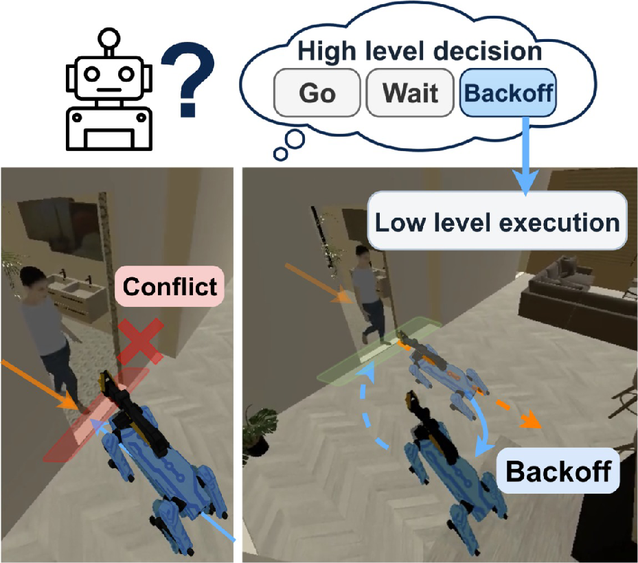
Hierarchical Learning for Crowded Navigation
Robots that choose among simple, recognizable behaviors when navigating through crowds.
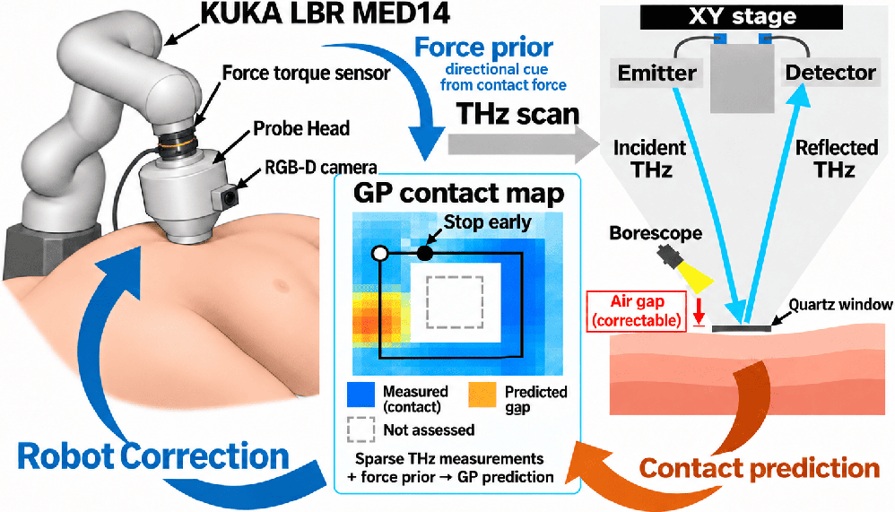
Robotic Terahertz Scanning
Learning-based contact control for robotic medical scanning, with the University of Warwick.
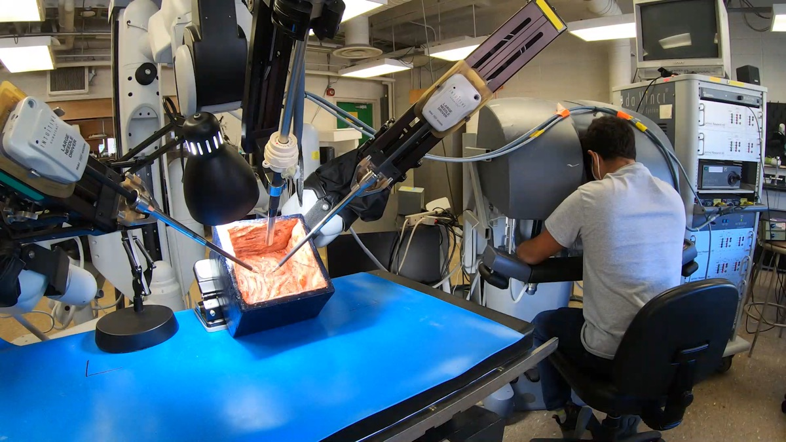
Learning Preferred Camera Views from Surgeon Demonstrations
Learning surgeons' preferred camera views for robotic surgery, with Wayne State University.
Publications
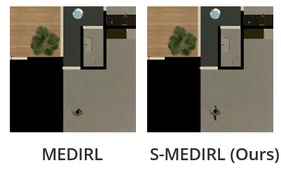
Learning Implicit Social Navigation Behavior using Deep Inverse Reinforcement Learning
IEEE Robotics and Automation Letters (RA-L), 2025
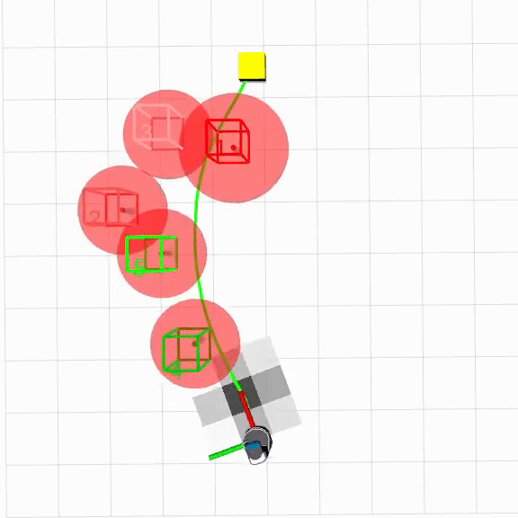
SoLo T-DIRL: Socially-Aware Dynamic Local Planner based on Trajectory-Ranked Deep Inverse Reinforcement Learning
IEEE International Conference on Robotics and Automation (ICRA), 2023
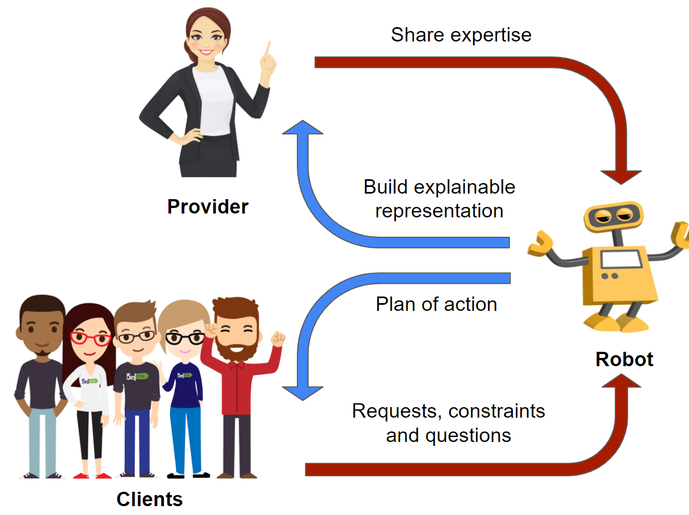
Providers-Clients-Robots: Framework for Spatial-Semantic Planning for Shared Understanding in Human-Robot Interaction
IEEE International Conference on Robot and Human Interactive Communication (RO-MAN), 2022

Simultaneous Human-Robot Matching and Routing for Multi-Robot Tour Guiding under Time Uncertainty
Journal of Autonomous Vehicles and Systems, 2021
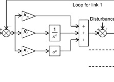
Control of a Three-Link Manipulator using Fractional-Order PID Controller
Fractional Order Systems, Elsevier, 2018
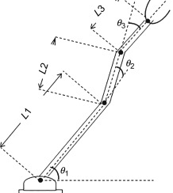
Study of Optimization Methods for Tuning of PID Gains for Three Link Manipulator
International Conference on Cloud Computing, Data Science & Engineering (Confluence), 2017
Teaching

ROB 101: Computational Linear Algebra
Instructor, Fall 2025 to present (about 170 students per semester). Course developer and Graduate Student Instructor, 2020 to 2021
An introductory course teaching linear algebra through robotics applications in Julia, with projects in perception (point cloud alignment), machine learning (rainfall prediction), and control (MPC for a Segway). Winner of the Provost's Teaching Innovation Prize; lectures and projects are used at other institutions. Honorable Mention, Towner Prize for Outstanding Graduate Student Instructors (2022).
- Flipped Julia labs where students work through problems together.
- Added a written midterm and final.
- Added lectures on classification as a first look at machine learning.
- Running a pilot study on student self-efficacy.
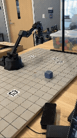
ROB 320: Robot Operating Systems
Instructor, Fall 2025 to present (about 30 students per semester)
A project-based course where students build their own ROS-like robotics software and run it on real robots.
- Migrated the course to ROS 2.
- Students build publish-subscribe communication over TCP sockets to drive an omni-drive MBot.
- Moved the kinematics projects onto real RX200 robotic arms.
- Added oral coding interviews in lab sections.
- Created a group final project with a live robot demo.
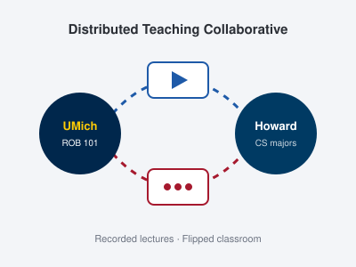
Distributed Teaching Collaborative (DTC)
ROB 101 Liaison, Jan 2026 to present
Our Fall 2021 offering of ROB 101 with Morehouse College helped start the DTC, which now includes Howard University, Berea College, and others. As the ROB 101 liaison for Howard, I provide the lecture material and coordinate with the Howard instructor, remotely supporting about 30 Howard students across two semesters. Since Fall 2026, linear algebra is a required course for Howard computer science majors, taught through ROB 101.
- Visited Howard in Winter 2026 to give an in-person research talk to the class.
- Co-developed a proposal to extend ROB 101 to support AI education in R2 schools, presented at the AWS-MLU Research and Teaching Symposium at Tuskegee University.
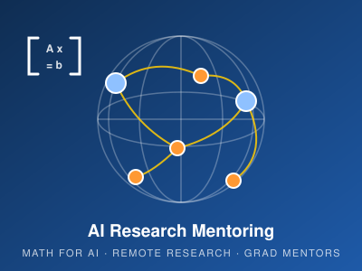
AI Research Workshop and Mentoring Program
Emergent Ventures Grant, Mercatus Center (PI), 2026 to 2027
An AI research workshop for high school and undergraduate students in countries such as India, pairing them with graduate student mentors.
Previous Teaching
- Fall 2023ROB 535: Self Driving Cars, Graduate Student Instructor. Office hours with a focus on control using MPC, and a guest lecture on planning and routing.
- Apr 2019ROB 530: Mobile Robotics, Guest Lecturer in Planning and Routing.
Past Projects

Robot Guide at the University of Michigan Museum of Art
Our robot tour guide gave tours at UMMA, introducing the artwork and handling follow-up questions with a GPT-based agent. We designed an iPad app to display artworks, and the robot gave tours to families of faculty and a visiting class of high school students.
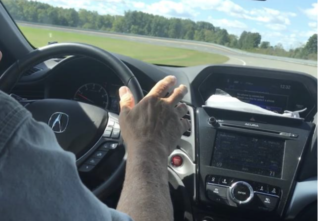
Honda R&D Americas Internship Project
Developed a control algorithm to carry out the longitudinal control of the vehicle for a custom application. Planned the trajectory of the vehicle for L2 autonomy using a pure pursuit algorithm with GPS data for feedback.
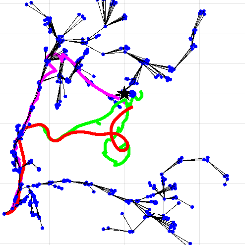
Motion Planning under Uncertainty
Proposed a particle RRT where the different particles were used to characterize the uncertainty in the robot model and do re-planning when the maximum likelihood particle trajectory was far from the planned trajectory. Also implemented discrete (A*, ANA*) and sampling-based (RRT, Bi-RRT) planners for the PR2 robot in OpenRAVE.
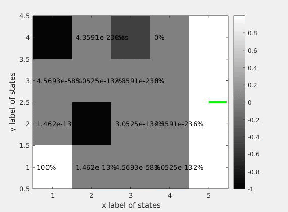
Approximate POMDP in a Grid World
Implemented Augmented MDP and MC-POMDP (approximate POMDP) planners on a simulated grid-world problem.

Robotic Systems Lab
Designed a PID controller for the balancing motion of a two-wheeled robot and drove it autonomously in a maze captured by a motion capture system, on a path planned using a Virtual Potential Field.
Talks and Presentations

Motion and Behavior Planning for Socially Assistive Robots
Ph.D. thesis defense, University of Michigan
Service and Outreach
Much of my outreach runs through my teaching: the Distributed Teaching Collaborative and the AI research workshop and mentoring program for students in countries such as India both bring ROB 101 to students beyond Michigan.
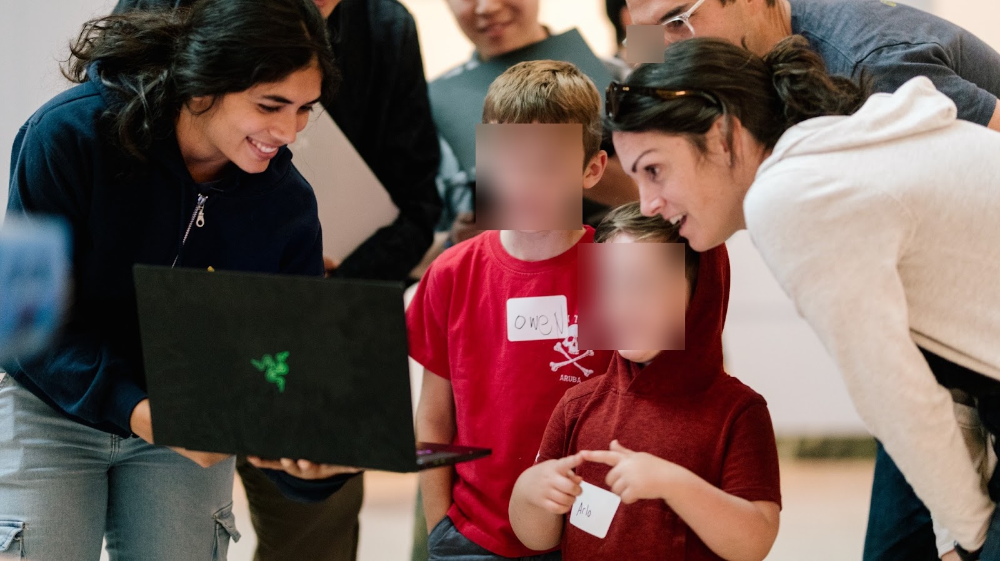
Robot at the museum
Our museum tour guide robot became a way to bring more people into robotics. We ran workshops for school visits at the University of Michigan Museum of Art, where children directed the robot themselves, and gave robot demos on Michigan Family Day, explaining to families and kids how robots work in human-centered environments. With a DEI grant through the College of Engineering, we also hired students from Michigan's Stamps School of Art and Design to bring artists' voices into what the robot could look like.

GuruTalks Seminar
2022
Shared robotics resources, my research, and my own path into robotics, hoping to make the field feel within reach for people who may not see themselves in it.